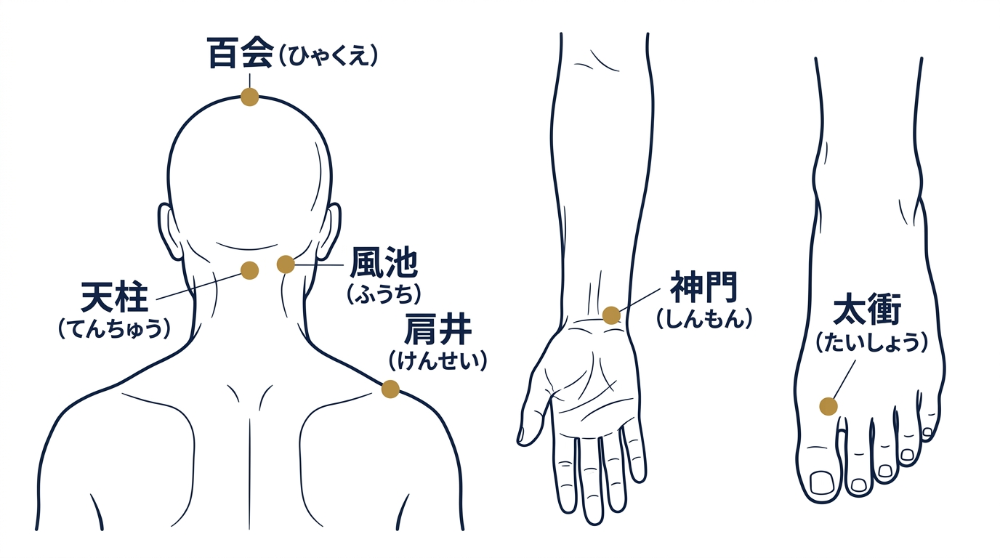

脳過敏症候群の鍼灸
脳の過剰興奮による聴覚過敏・頭鳴り・めまい・片頭痛に対し、筋肉・神経・内臓の乱れから脳を鎮める鍼灸解説。
なぜ「検査で異常なし」でも音や光・頭痛がつらいのか
銀座そうぜん鍼灸院の臨床解説では、脳過敏症候群に伴う頭鳴り・聴覚過敏・めまい・片頭痛の背景に、シナプス間のグルタミン酸受け渡しが停滞する脳の過覚醒（興奮の持続）と、首・腰の深層筋緊張やリンパ・内臓疲労など体側から脳へ送られ続ける異常信号（「悪いフック」）の連鎖があると考えています。
回復には「体の土台が先に整い、脳の過敏性が後から沈静化する」という時間差があり、症状の波が落ち着いてきたらあえて施術間隔を空けて（月1回〜2か月に1回）、脳の神経回路が静かな状態で定着する「安定化」を待つ設計を重視しています。
脳過敏症候群に用いられる代表的な8つのツボ

| ツボ名（経穴） | 位置の目安 | 主な狙い・役割 | セルフケアの注意点 |
|---|---|---|---|
| 百会（ひゃくえ） | 両耳の上端を結んだ線と正中線が交わる頭頂部 | 自律神経調整、頭部の循環改善、不眠・めまい・頭痛の緩和 | 中指を重ねて垂直に優しく押圧。強く叩いたり揉まない |
| 天柱（てんちゅう） | 後頭部の髪の生え際、首中央の太い筋（僧帽筋）の外縁 | 首深部の緊張緩和、自律神経の安定、頭痛・眼精疲労 | 左右同時にゆっくり押す程度。強い首マッサージはNG |
| 風池（ふうち） | 天柱の指1本外側、耳後ろの骨（乳様突起）と後頭骨の間 | 後頭神経（C2領域）の過敏鎮静、聴覚過敏・気象病頭痛 | 反対側の目に向けて軽く添える程度にとどめる |
| 神門（しんもん） | 手のひら側、手首の横ジワの小指側くぼみ | 神経の高ぶり・不安・動悸・入眠困難の鎮静 | 親指で「痛気持ちいい」強さで軽く約30回。就寝前に好適 |
| 不容（ふよう） | みぞおちの高さ、正中線から左右に指幅2〜3本外側 | 胃腸・横隔膜の緊張緩和、内臓由来の「悪いフック」解除 | 食直後は避け、強く押さず温める程度にとどめる |
| 太衝（たいしょう） | 足の甲、親指と人差し指の骨が交わる手前のくぼみ | ストレス性の興奮・イライラ・頭痛の鎮静 | 息を吐きながら優しく圧迫。強痛刺激は交感神経を刺激するため注意 |
| 肩井（けんせい） | 首の付け根（第7頸椎）と肩先を結んだ線の中央 | 首肩の緊張緩和、頭部への循環改善 | 強い揉みほぐしは脳過敏を悪化させやすいため温め中心（妊娠中禁忌） |
| 神泉（しんせん） | 当院臨床で用いる自律神経・頭鳴り調整点（公式解説準拠） | 脳の過覚醒の鎮静・自律神経バランス調整 | 自己判断の強刺激は避け、専門家の評価・施術に委ねる |
査読論文が示す「脳の過敏性・片頭痛・耳鳴り×鍼灸」のエビデンス
「脳過敏症候群」は日本独自の臨床概念であるため、国際査読文献では中核病態である片頭痛（大脳皮質の過剰興奮・中枢性感作）・fMRI脳機能変化・原発性耳鳴りに対する高品質なRCT・メタ解析を参照します。
| 年・研究デザイン | 対象・規模 | 主な結果と臨床的意義 | 限界・出典 |
|---|---|---|---|
| 2017年 多施設RCT | 前兆のない片頭痛 249名（24週追跡） | 16週時点の月間発作減少は真鍼−3.2回 vs 偽鍼−2.1回（差1.1回, P=.002）、待機群比で差1.8回（P<.001）。 | 週5回×4週の高頻度プロトコル。JAMA Intern Med (PMID: 28241154) |
| 2020年 多施設RCT | 鍼未経験の反復性片頭痛 150名（7病院） | 17〜20週の片頭痛日数は真鍼−3.9日 vs 偽鍼−2.2日（調整差−2.1日, P<0.001）、重篤な有害事象なし。 | 20週追跡のため長期持続は要検証。BMJ (PMID: 32213509) |
| 2016年 Cochraneメタ解析 | 反復性片頭痛 22 RCTs（計4,985名） | 50%以上発作減少は予防薬比57% vs 46%（RR 1.24）、副作用による脱落はOR 0.27と安全性で優位。 | 予防薬比較は非盲検・長期データ不足。Cochrane (PMID: 27351677) |
| 2023年 fMRIメタ解析 | 片頭痛fMRI研究 7件（計409名） | 症状改善に伴い左角回の活動亢進と左右上前頭回の活動低下を確認。特定脳領域の自発活動調節を示唆。 | 収録7件・撮像プロトコル不均一。Front Neurol (PMID: 36970520) |
| 2023年 メタ解析 | 原発性耳鳴り 34 RCTs（計3,086名） | 対照群比でTHI・TEQ・VAS・HAMA（不安）・HAMD（抑うつ）の有意低下と良好な安全性を報告。 | GRADE確実性は低く異質性が大きい。Am J Otolaryngol (PMID: 36905913) |
| 2019年 国内症例報告 | 光音過敏を伴う片頭痛60代女性（n=1） | 後頭部C2領域への鍼治療18診で月間頭痛8回→1〜4回、HIT-6が68→57点へ改善し気象誘発も軽減。 | 単一症例報告（耳鳴り主体例への通電は慎重判断）。J-STAGE |
生活上の注意点と、病院受診を最優先すべきサイン
回復を妨げないための約束事
- マッサージ・強い整体は受けない：症状が2/10程度まで下がった時期に自己判断で揉みほぐしを受け、再悪化するケースが多いため避けてください（公式解説）。
- 処方薬は自己中断せず睡眠を最優先：睡眠導入剤や安定剤は主治医の指示通り継続し、まず脳が休める睡眠を確保します。
- 就寝前スマホ・激辛・刺激物を控える：1日5分でも思考を休める静かな時間を取り入れましょう。
⚠ 脳神経外科・耳鼻咽喉科等の受診を最優先すべきサイン
バットで殴られたような突然の激痛（雷鳴頭痛）、片側の手足の脱力・しびれ・ろれつ困難・視野欠損、発熱や激しい嘔吐を伴う頭痛、急激な難聴・回転性めまい、心臓の拍動に一致する耳鳴りがある場合は、直ちに専門医療機関を受診してください。
参考文献・出典
- 銀座そうぜん鍼灸院「脳過敏症候群の鍼灸」
- Zhao L et al., JAMA Intern Med (2017) — PubMed PMID: 28241154
- Xu S et al., BMJ (2020) — PubMed PMID: 32213509
- Linde K et al., Cochrane Database Syst Rev (2016) — PubMed PMID: 27351677
- Li M et al., Front Neurol (2023) — PubMed PMID: 36970520
- Wu Q et al., Am J Otolaryngol (2023) — PubMed PMID: 36905913
- 吉川一樹ほか『全日本鍼灸学会雑誌』69(3):204–209 (2019) — J-STAGE
よくある質問（FAQ）
Q. 耳鼻科や病院で異常なしと言われましたが相談できますか？
脳過敏は一般的な検査で異常が出にくい状態のため、同様のお悩みで来院される方が多くいらっしゃいます。
Q. どのくらい通う必要がありますか？
まずは首や腰など体の土台を整えることから始め、安定してきたら月1回〜2ヶ月に1回へと間隔を空けて卒業を目指します。
Q. セルフケアで揉んだりストレッチしても良いですか？
強い刺激は脳の興奮を強める恐れがあるため、当院では首・腰のマッサージやストレッチを控えていただいています。
あわせて読まれる関連疾患（特に対応することが多い症状）
頭の中で「キーン」「ザー」と音が鳴り続ける状態を、脳の過覚醒（自律神経）と首肩の深層筋から整える施術解説。
感染後に長引く倦怠感・ブレインフォグ・嗅覚障害・自律神経症状に対し、全身の自己回復力を引き出す施術解説。
吸入薬で止まらない長引く空咳に対し、自律神経・気管支神経の興奮と逆流性食道炎の視点から整える施術解説。
交感神経と副交感神経のバランス崩れによる不眠・倦怠感・めまい・胃腸不調を、体と神経の両面から整える解説。
肘の内側での尺骨神経圧迫による小指・薬指のしびれに対し、前腕の深層筋を緩め神経再生を促す施術解説。
30歳以上の女性の約4人に1人にみられる子宮筋腫に対し、骨盤内の血流と自律神経バランスを整える施術解説。